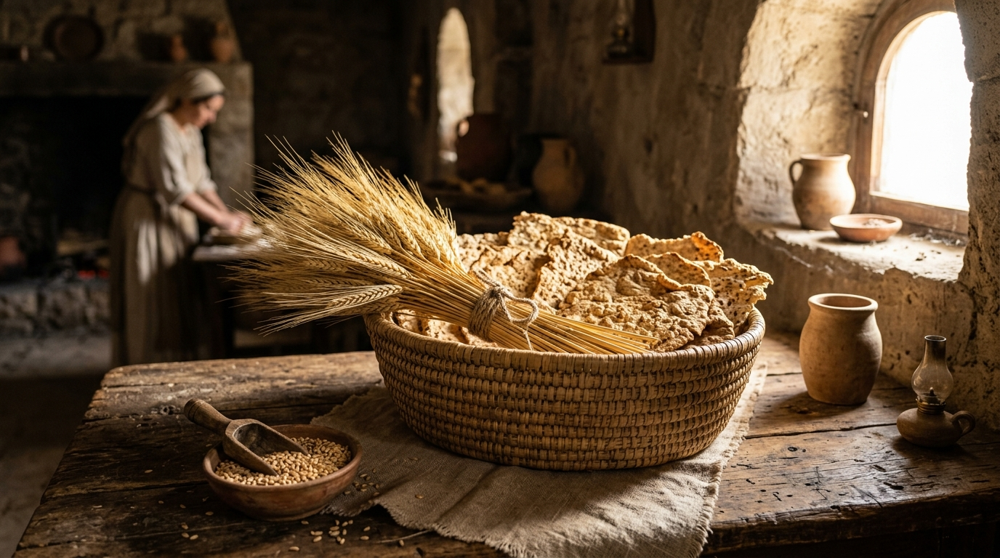

O Pão Incorruptível e o Primeiro Feixe da Ressurreição
A maioria dos cristãos conhece a história da crucificação na sexta-feira (Páscoa) e a ressurreição no domingo, mas frequentemente ignoramos a riqueza do que aconteceu no intervalo entre esses dois eventos. O calendário profético estabelecido por Deus em Levítico 23 não é pontilhado de feriados soltos; é um maquinário preciso. A cruz não é o fim da história da redenção.
O período exato entre a morte de Cristo e o túmulo vazio foi desenhado por Deus para cumprir simultaneamente duas festas fundamentais do Antigo Testamento: a Festa dos Pães Asmos (Hag HaMatzot) e a Festa das Primícias (Bikkurim). Compreender o significado profético destas duas festas é descobrir que Jesus não apenas morreu no dia certo, mas foi sepultado e ressuscitou cumprindo o cronograma divino ao segundo.
Índice do Estudo:
- 1. Pães Asmos: A Guerra Contra o Fermento
- 2. Bedikat Chametz: A Caça à Corrupção Oculta
- 3. Cristo no Túmulo: O Pão que Não Viu Corrupção
- 4. Primícias: O Feixe Movido Diante de Deus
- 5. O Alinhamento Perfeito do Domingo de Ressurreição
- 6. Tabela de Resumo e Aplicação Prática
1. Pães Asmos: A Guerra Contra o Fermento
A Festa dos Pães Asmos (sem fermento) estava umbilicalmente ligada à Páscoa. Ela iniciava-se no dia 15 do mês de Nisã (o dia exato seguinte ao abate do cordeiro pascal) e durava sete dias. Durante esse período, Deus ordenou uma regra drástica em Êxodo 12:15: "Sete dias comereis pães asmos; logo ao primeiro dia tirareis o fermento das vossas casas; porque qualquer que comer pão levedado... aquela alma será cortada de Israel".
Para a mente moderna, o fermento é apenas um ingrediente de panificação. Mas, na Bíblia, o fermento (chametz) é o símbolo absoluto do pecado, do orgulho e da hipocrisia. O fermento atua secretamente; basta uma quantidade mínima para infectar e "inchar" toda a massa com ar. Jesus advertiu: "Acautelai-vos do fermento dos fariseus, que é a hipocrisia" (Lc 12:1). A ordem de comer pão sem fermento lembrava Israel da pressa da fuga do Egito (não houve tempo para a massa crescer), mas também era um imperativo espiritual: a vida do povo redimido não podia ter a influência "inchada" da velha vida de escravidão.
2. Bedikat Chametz: A Caça à Corrupção Oculta
Na cultura judaica, isso gerou uma tradição séria e lúdica chamada Bedikat Chametz (A Busca pelo Fermento). Na noite anterior à festa, o pai da família pegava uma vela, uma pena e uma colher de pau, e revistava cada canto escuro da casa em busca de qualquer migalha de pão fermentado que tivesse sobrado. Quando encontrado, o fermento era varrido, levado para fora no dia seguinte e queimado no fogo.
O apóstolo Paulo usa exatamente essa imagem para repreender os cristãos de Corinto que estavam tolerando o pecado na igreja: "Alimpai-vos, pois, do fermento velho... Porque Cristo, nossa páscoa, foi sacrificado por nós. Pelo que celebremos a festa, não com o fermento velho, nem com o fermento da maldade e da malícia, mas com os asmos da sinceridade e da verdade" (1 Coríntios 5:7-8).
3. Cristo no Túmulo: O Pão que Não Viu Corrupção
Quem cumpriu plenamente a Festa dos Pães Asmos? O próprio Senhor Jesus. Ele declarou ser o "Pão da Vida" que desceu do céu (João 6). Ele nasceu em Belém (cujo nome em hebraico significa "Casa do Pão"). E Ele viveu a única vida humana sem a mancha e a corrupção (fermento) do pecado.
Na sexta-feira, o Cordeiro foi morto. Mas no sábado (o primeiro dia dos Pães Asmos), o corpo de Jesus repousava no túmulo escuro. Pela lei natural, um cadáver começa a inchar e entrar em decomposição. Mas o corpo de Jesus cumpriu a promessa profética do Salmo 16:10: "Pois não deixarás a minha alma no inferno, nem permitirás que o teu Santo veja corrupção". Ele foi sepultado sem "fermento", permanecendo o Pão Incorruptível.
4. Primícias: O Feixe Movido Diante de Deus
Se o Pão Asmo representa a ausência de corrupção do corpo de Jesus no túmulo, a Festa das Primícias (Bikkurim) representa a vitória explosiva da vida.
Deus instruiu em Levítico 23:10-11 que, quando Israel entrasse em Canaã, a primeira colheita agrícola da primavera seria a cevada. Contudo, o povo era proibido de comer de sua própria colheita antes que o primeiro feixe (a primícia) fosse levado ao sacerdote. O sacerdote, então, movia esse feixe de cevada de um lado para o outro diante do altar do Senhor, "no dia seguinte ao sábado" (ou seja, no domingo).
A aceitação desse primeiro feixe por Deus era a garantia divina de que toda a vasta colheita que ainda estava nos campos seria aceita e abençoada. O primeiro fruto santificava o restante da colheita.
5. O Alinhamento Perfeito do Domingo de Ressurreição
Observe o alinhamento de tirar o fôlego: em que dia exato Jesus ressuscitou dos mortos? No primeiro dia da semana, no amanhecer do domingo que se seguia ao sábado da Páscoa. Jesus abriu os olhos e saiu do túmulo no instante exato em que o Sumo Sacerdote estava no Templo em Jerusalém, movendo o primeiro feixe de cevada diante de Deus.
Paulo compreendeu a magnitude disso ao escrever: "Mas de fato Cristo ressuscitou dentre os mortos, e foi feito as primícias dos que dormem" (1 Coríntios 15:20). A ressurreição de Cristo não foi um milagre isolado de um único indivíduo; Ele foi o "primeiro feixe" colhido no campo da morte e apresentado diante do Pai. Porque o Primeiro Feixe (Jesus) foi aceito, a grande colheita final (todos nós que cremos Nele) tem a garantia inquebrável de que também ressurgirá com um corpo glorificado na Sua vinda.
6. Tabela de Resumo e Aplicação Prática
| Festa Bíblica | Sombra no Antigo Testamento | O Cumprimento em Cristo |
|---|---|---|
| Páscoa (Sexta-feira) | O sacrifício do Cordeiro para nos livrar da ira de Deus. | A Morte de Cristo na cruz, pagando a nossa dívida do pecado. |
| Pães Asmos (Sábado) | O banimento do fermento (corrupção) das casas e dieta israelitas. | O Sepultamento. O corpo imaculado de Cristo não sofreu decomposição. |
| Primícias (Domingo) | O primeiro feixe colhido movido no Templo para garantir a safra. | A Ressurreição! Cristo é o primeiro fruto; nós seremos a grande colheita. |
💡 Aplicação Prática: O que aprendemos hoje?
A Festa dos Pães Asmos nos convoca a uma faxina espiritual. A Bíblia diz que nós já fomos salvos pelo sangue do Cordeiro (Páscoa). Contudo, a salvação exige que "tiremos o fermento velho" da nossa vida. Quantas vezes toleramos os "pequenos fermentos" da inveja, da malícia, da mentira ou do orgulho nas nossas famílias, achando que eles não causarão danos? O fermento trabalha no escuro e infla a massa. A Palavra nos chama hoje para fazermos uma busca minuciosa na casa do nosso coração e varrermos todo o pecado escondido.
A Festa das Primícias, por outro lado, é o antídoto definitivo contra o medo da morte. O maior inimigo do ser humano não é a doença, nem a pobreza, mas o túmulo. Porém, porque Cristo ressurgiu na manhã de Primícias, a sepultura perdeu a sua palavra final. A ressurreição dEle é o "recibo" de Deus, assinado e carimbado, garantindo que o Seu sacrifício foi aceito e que a morte foi derrotada. Como cristãos, nós não lamentamos nossos entes queridos que morreram em Cristo como quem não tem esperança; nós sabemos que eles fazem parte da colheita que Deus virá buscar.
Continue sua jornada:
- Voltar ⬅️ Índice de Festas Bíblicas
- Temas 📚 Ver todos os estudos
Apoie este projeto 🌱
Se este estudo foi útil, considere apoiar a manutenção do site.
Chave PIX (Celular):
marcosmontanaria@gmail.com